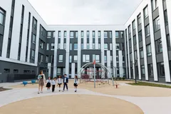
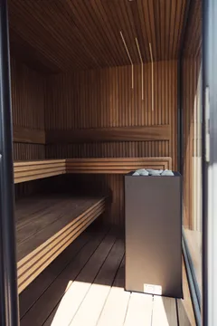
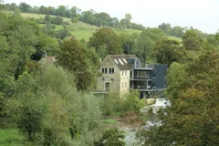
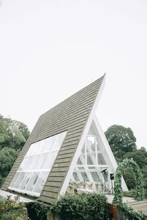
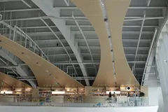
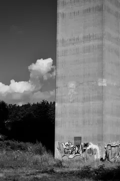
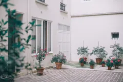

- Home
- Projects
Our work
8 projects across homes, civic buildings, schools and workplaces. Each started with a site and a question.
8 projects
- AN-2025-07Birch Court Primary SchoolDundeeEducation20253,200

- AN-2025-08Harbour SaunaAnstruther, FifeResidential202540

- AN-2024-05House on the SkerryIsle of SkyeResidential2024185
- AN-2024-06Tide Mill StudiosFifeWorkplace2024900

- AN-2023-03The Orchard PavilionPerthshireCultural2023220

- AN-2023-04Ullapool Library & ArchiveUllapool, HighlandCultural20231,450

- AN-2022-02The Hollow TowerGlasgowWorkplace20226,800

- AN-2021-01Lanark Courtyard HousesEdinburghResidential20211,100
